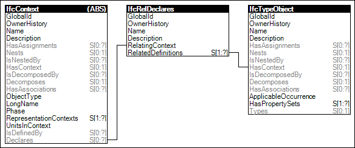

Declaration of object types, such as element types utilized by the element occurrences within this project, within the context of the project
Figure 2 illustrates an instance diagram.

Figure 2 — Object Type Definitions
Link to this page
 Link to this page
Link to this page